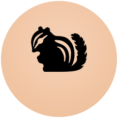
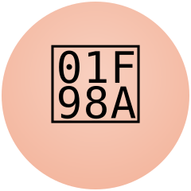
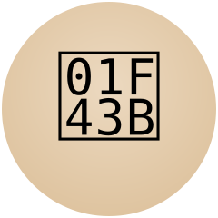
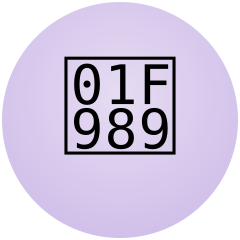
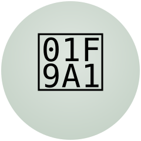
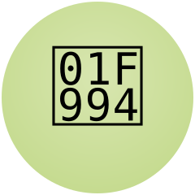

Тисса
бельчонок-девочка
Очень быстрая и энергичная. Уверена, что знает все короткие пути, но иногда торопится и ошибается.

бельчонок-девочка
Очень быстрая и энергичная. Уверена, что знает все короткие пути, но иногда торопится и ошибается.

лисичка-девочка
Хитрая и сообразительная. Любит загадки и игры, умеет находить решения таких задач, которые другим не по силам.

медвежонок
Добрый и сильный, но немного неуклюжий. Часто смущается, но всегда готов помочь друзьям.

совёнок-девочка
Любознательная и внимательная. Много читает и всё запоминает. Первая замечает то, что другие не видят.

барсучонок
Ворчливый и упрямый, считает себя самым мудрым и опытным. Любит порядок и правила, но на самом деле очень хороший друг.

ёжик
Любознательный ёжик и верный друг. Главный герой нашего волшебного мира, всегда готов к новым приключениям.